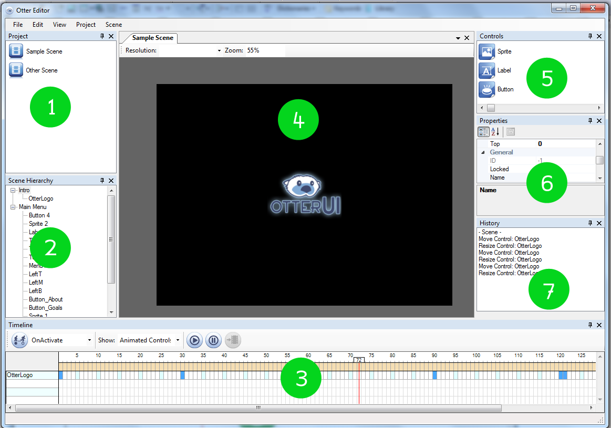

General Layout:

(1) Project View:
Displays and manages the scenes in your project. From this window you can create, delete or rename scenes.
(2) Scene Hierarchy
Displays and manages the view and control hierarchy of the active scene. This window allows you to create, delete and rename views and controls.
(3) Timeline
Manages the animations within a view. This window also allows you to preview animations by moving the current-frame indicator to the appropriate frame.
(4) Scene View
This is the main view of the OtterUI Editor. Within this view you can edit and preview the current scene and view. Multiple scenes can be open at the same time, but only one view in the scene can be viewed at a time.
(5) Controls
Lists the available controls in the OtterUI Editor.
(6) Properties
When a keyframe, control or view is selected the item's properties will be displayed here. Within the property window you can change the values of an item as is appropriate.
(7) History View
This window displays the undo/redo history. Clicking on entries in the list will either progress or revert to associated action.
Created with the Personal Edition of HelpNDoc: Easily create HTML Help documents